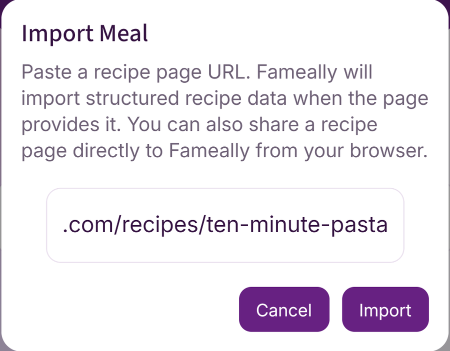
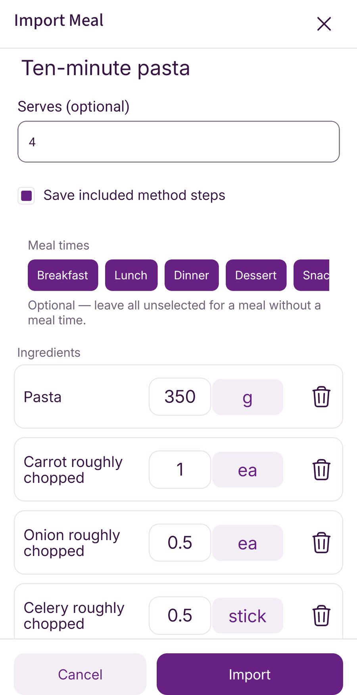
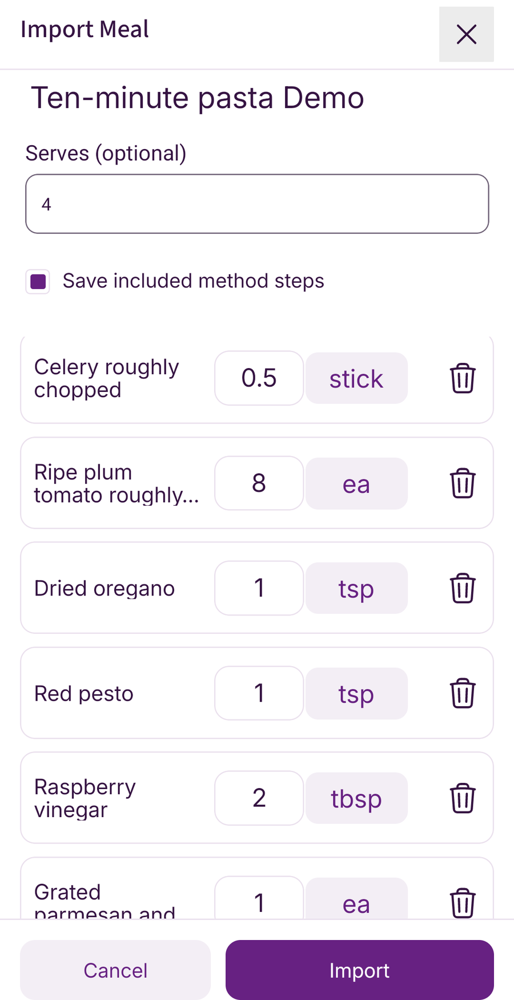

Import a recipe into Fameally, check what came across, then save a meal you can find and use again. Treat the imported information as a starting point: ingredient names, quantities and cooking instructions still need a review against the original page.
This walkthrough uses Tony Tobin's Ten-minute pasta on Good Food. The screenshots show a demonstration copy renamed Ten-minute pasta Demo, with one ingredient name shortened and a quantity deliberately chosen after checking the source. This is a guide to using Fameally, rather than a reproduction of the recipe.
Check access and choose a recipe page
Sign in to Fameally with current app access and use the workspace in which you want to save the meal. You need an internet connection to fetch the recipe. Sharing a household workspace needs Family access; importing a recipe and inviting people to a household are separate tasks.
The steps and screenshots were checked on Fameally 1.9.80, Android 14, on 24 November 2026, using an owner account in a demonstration household with Family access. iPhone and iPad were not tested for this walkthrough. Menus and layout can differ by platform or version. If a control is unavailable, check the access shown in your app and current plans, or contact support.
Open the actual recipe page in your browser and copy its address. A search-results page, a collection of dinner ideas or an image of a recipe is not the same as a recipe page. In the checked release, Fameally's import dialog explains that it imports structured recipe data when the page provides it.
Keep the original page open while checking the import, and bookmark it if you will need it again. Do not assume a website will import successfully because it displays a recipe in the browser.
1. Open the recipe import
- In Fameally, open Library → Meals.
- Choose + to open the meal form.
- Choose Import. In this version it is below Serves (optional), next to Copy from….
- In Import Meal, paste the full recipe address into https://….
- Dismiss the keyboard if it covers the controls, then choose Import.
- Wait for Importing recipe… to finish. A successful fetch opens the recipe review screen.

The URL dialog and the review screen both have an Import control. The first fetches the recipe; the second saves the version you have reviewed. Reaching the preview is not the final save.
2. Review the recipe and serving yield
Check the meal name and compare the ingredients with the original page. Scroll through the whole list, including ingredients near the bottom that may not appear on the first screen.
- Name: make it recognisable in your library. You can select the title, edit it and confirm the change. We added Demo to distinguish the test copy.
- Serves (optional): check how many people the recipe's ingredient amounts are intended to serve. The example imported a yield of four, matching the source page.
- Save included method steps: check this option if you want to retain the method supplied by the import. It was selected for this demonstration; the saved steps were then checked in Cook.
- Meal times: select any that suit the meal, or follow the screen's option to leave them unselected for a meal without a meal time.
A successful import does not establish that every field is correct. Check omitted amounts, fractions, ranges and ingredients added “to serve” against the recipe. Keep the recipe yield and the ingredient amounts consistent rather than guessing a value to make the preview look complete.

3. Correct names, quantities and units before saving
- Select an ingredient name to edit it. Type the name you want to keep, then confirm with the tick or keyboard confirmation. In this example, we shortened the carrot entry to Carrots.
- Select the quantity on an ingredient row. Edit the value in the quantity control and confirm the change. Check that the row now shows the intended number.
- Select the unit beside the quantity to open Choose Unit. Pick the appropriate unit; for an individual item, Each is displayed as ea on the row.
- Compare the revised row with the original recipe and your intended use. Repeat for any other entry that needs attention.
The source example gives a range for the tomatoes. The checked import produced a single quantity of six; we deliberately chose eight for the demonstration and verified 8 ea after saving. This illustrates a review decision, not a rule that imports always choose the correct end of a range.
Shortening a name can make the shopping list easier to read, but keep any preparation information you still need in the recipe you will follow. Do not remove a useful distinction just to make two ingredients look alike.

4. Save the reviewed meal and check the result
- When the preview is ready, choose the bottom Import control.
- Wait for the return to the library. The checked release showed Imported into Fameally.
- In Library → Meals, search for the saved name. If filters are hiding it, try All; the Imported filter is also available for imported meals.
- Open the meal. Check the saved name, Serves value and ingredient amounts. In the demonstration, the saved meal shows Serves 4, Carrots and the chosen tomato quantity.
- Choose Cook and compare the saved method with the source before relying on it for an unfamiliar dinner.

The useful result: the meal is now saved in the library with the reviewed ingredients, rather than remaining an unsaved import preview. The demonstration retained its method because Save included method steps was selected.
No original-source link was visible on the saved meal or Cook screens checked for this example. Keep your browser bookmark rather than relying on the import as your only record of where the recipe came from. The source recipe remains credited and linked above.
If the import fails or looks incomplete
- “Could not import that recipe” appears
This was the actual message when we tested Fameally's Support page, which is not a recipe page. The URL dialog remained open. Check that you copied the full address of a public recipe, rather than a homepage, search result or collection. Check your connection, then try again if appropriate.
- The page works in a browser but will not import
The importer depends on the recipe information the website makes available. Access restrictions or missing or unreadable structured data can prevent a usable import. A working browser page alone does not establish compatibility. Do not try to bypass a site's login or access restrictions.
- The ingredient amounts look wrong
Compare the source with the preview, especially ranges, fractions and entries without an exact amount. Edit the row and check its unit before saving. Do not treat the imported quantity as a cupboard-stock check or a dietary-suitability check.
- The cooking instructions are missing
Check whether the import offered Save included method steps and whether it was selected. Use the original recipe if the saved method is incomplete. An ingredient list on its own is not a verified complete recipe.
- I would rather add the meal myself
Use Cancel to leave the URL dialog. The meal form lets you enter a meal name and ingredients yourself. Confirm each ingredient before saving, and use the getting-started tutorial for the basic meal-to-list routine. You can keep the original recipe open for its method.
- I still need help
Contact Fameally support with the recipe-page address, the message shown and your app version and device. Explain whether the fetch failed, the preview was incomplete or the saved meal was missing information. Do not send passwords or private recipe-site credentials.
Use the saved meal in your week
Once the saved recipe looks right, use it when choosing meals in Planning. Check the intended meal servings and the resulting shopping quantities before buying; saving a recipe in the library is separate from adding it to a day.
Import one recipe you expect to cook rather than filling the library with unreviewed links. A small collection of meals you can recognise, find and use is a practical starting point.